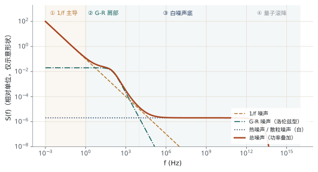
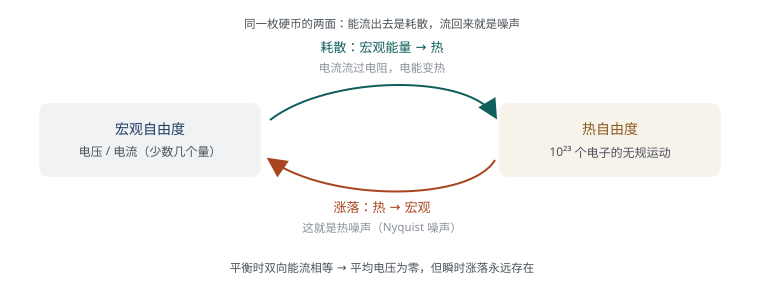
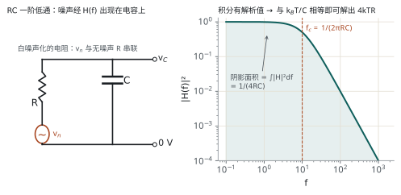
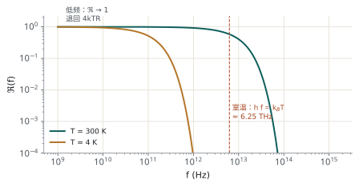
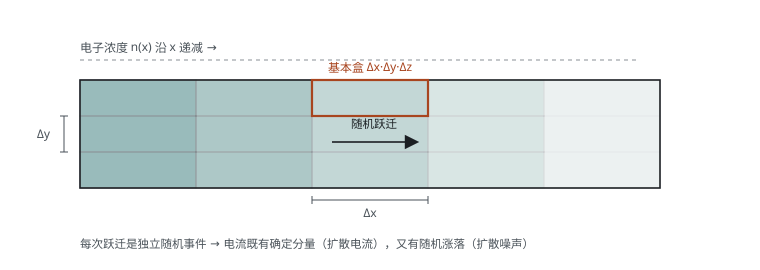
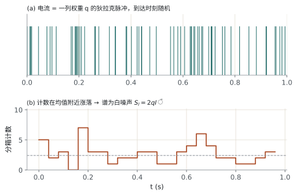
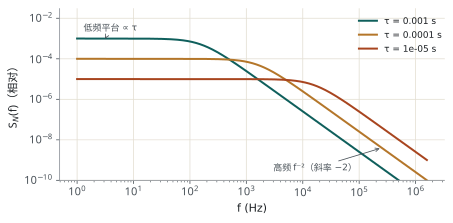
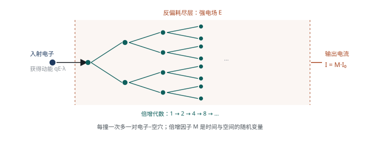

噪声到底从哪来 七类噪声源：起源、谱密度、适用条件
上一章给了描述噪声的语言。这一章拆"源"：每类噪声对应一个具体物理过程，物理过程决定谱型，谱型决定它在哪个频段限制你。
3.1引言：为什么必须研究"源"
通信接收机里，信号从天线进来，一路被放大，噪声也在这一路叠加。信号弱于噪声时信息就丢了——GPS 是最典型的例子：信号功率密度低于接收机噪声电平，仍能工作，靠的是从噪声里"积"出信号的技术。

3.2热噪声 Thermal Noise
3.2.1 起源与历史
| 年份 | 事件 |
|---|---|
| 1906 | 爱因斯坦预言：金属内自由电子的布朗运动会在导体两端产生波动的电动势 |
| 1928 | J. B. Johnson 首次实验观测到；同年 H. T. Nyquist 给出功率谱的理论计算 |
所以它有三个名字：热噪声（按成因）、Johnson 噪声（按发现者）、Nyquist 噪声（按理论）。
起源：导电材料内部自由电子的热运动。电子随机游走，会在导体某一端暂时聚集，形成瞬间的电位差；但电荷不会永久累积，所以平均电压为零，涨落不为零。
3.2.2 能量流动的解释
一个物理系统有大量自由度。宏观 → 热 是耗散（电流流过电阻发热）；热 → 宏观 是涨落（就是热噪声）。两者是同一件事的两个方向。

耗散与噪声是同一件事的两个方向，所以：① 纯电抗元件（理想 L、C）不产生热噪声；② 有耗散的地方必有噪声，损耗越小噪声越小。
还有一点常被误解：热噪声不依赖外加电压。常规电场下，电场传给自由电子的能量相对其热能可以忽略，所以加不加偏置，热噪声都在那里。
课件原意：热运动是物质普遍属性，它的存在与温度无关（绝对零度以上就有）；但热噪声的幅度随 \(T\) 线性下降。别说成"温度不影响热噪声"。
3.2.4 奈奎斯特定理
开路（电压源形式）用第一式，短路（电流源形式）用第二式，两者是同一个电阻的两种等效描述。\(k=1.380649\times10^{-23}\ \mathrm{J/K}\) 是玻尔兹曼常数，\(G=1/R\)。
\(T=300\ \mathrm{K}\) 时，\(4kT\approx1.66\times10^{-20}\ \mathrm{J}\)，于是
\[ v_n=\sqrt{4kTR}\approx1.29\times10^{-10}\sqrt{R}\quad[\mathrm{V/\sqrt{Hz}},\ R\text{ 以 }\Omega\text{ 计}] \]
即 \(1\ \mathrm{k\Omega}\to4.1\ \mathrm{nV/\sqrt{Hz}}\)，\(1\ \mathrm{M\Omega}\to129\ \mathrm{nV/\sqrt{Hz}}\)，\(100\ \Omega\to1.3\ \mathrm{nV/\sqrt{Hz}}\)。电阻每增大 100 倍，噪声电压增大 10 倍。
推导：为什么是 \(4kTR\)
思路很漂亮：把一个处于温度 \(T\) 的电阻 \(R\) 与电容 \(C\) 并联，用两种方法算电容上的均方电压，再令两者相等。

-
由统计物理写出电容电压的概率密度
电容储能 \(E=\tfrac12CV_C^2\)，系统处于能量 \(E\) 的概率正比于 \(e^{-E/kT}\)，所以 \[ p(V_C)=K_0\exp\!\left(-\frac{CV_C^2}{2kT}\right) \] 由归一化 \(\int p\,\mathrm{d}V_C=1\) 定出 \(K_0=\sqrt{C/(2\pi kT)}\)。 -
求均方电压
\[ \overline{V_C^2}=\int\limits_{-\infty}^{+\infty}V_C^2\,p(V_C)\,\mathrm{d}V_C=\frac{kT}{C} \] 这正是能量均分定理：每个二次型自由度平均携带 \(\tfrac12kT\) 能量，\(\tfrac12C\overline{V_C^2}=\tfrac12kT\)。 -
换到频域再算一次
噪声源 \(v_n\) 经 RC 分压，功率传递函数为 \(1/[1+(2\pi fRC)^2]\)，于是 \[ \overline{V_C^2}=S_V(0)\int\limits_0^{\infty}\frac{\mathrm{d}f}{1+(2\pi fRC)^2}=\frac{S_V(0)}{4RC} \] -
两式相等，解出谱密度
\[ \frac{kT}{C}=\frac{S_V(0)}{4RC}\ \Longrightarrow\ S_V(0)=4kTR \]
它把"统计物理的平衡态结论"和"电路理论的传输函数"对上，得到一个与材料、几何都无关的普适结果：热噪声只取决于 \(R\) 和 \(T\)。同阻值的碳膜电阻、金属膜电阻、绕线电阻，热噪声完全一样——它们的差别在 1/f 噪声上，不在热噪声上。
等效电路
一个有噪声的电阻 = 一个同阻值的无噪声电阻 + 一个集总噪声源。噪声源有两种接法，用哪种取决于后续电路：
两者等价，但不能同时用——同时放两个源会把功率算成两倍。
3.2.6 量子修正与任意阻抗
奈奎斯特定理并非在任意高频率都成立。当 \(hf\) 与 \(kT\) 可比时，必须引入普朗克因子：

令 \(hf=kT\)，得 \(f=kT/h\)。室温 \(T=300\ \mathrm{K}\) 时
\[ f=\frac{1.381\times10^{-23}\times300}{6.626\times10^{-34}}\approx6.25\ \mathrm{THz} \]
也就是说：在 6.25 THz 以下，经典公式 \(4kTR\) 足够准；常规电子学（GHz 以下）根本碰不到量子修正。这也是为什么量子噪声在第三章里显得"离得很远"——它只在红外以上的频段主导。
推论：量子修正让总噪声功率变成有限值
若不加修正，把 \(4kTR\) 从 0 积到 \(\infty\) 会得到无穷大功率（紫外灾难）。加上 \(\Re(f)\) 后：
\[ \overline{v_n^2}=4kTR\int\limits_0^{\infty}\frac{hf/kT}{e^{hf/kT}-1}\,\mathrm{d}f \overset{u=hf/kT}{=}\frac{4R(kT)^2}{h}\int\limits_0^{\infty}\frac{u}{e^u-1}\,\mathrm{d}u =\frac{2\pi^2}{3}\cdot\frac{R(kT)^2}{h} \]
用到的积分是 \(\int\limits_0^\infty \frac{u}{e^u-1}\mathrm{d}u=\frac{\pi^2}{6}\)。结果有限，且量级由 \(R(kT)^2/h\) 决定——物理上对应"每个模式最多 \(hf\) 的能量"这一量子限制。
任意阻抗：若阻抗不是纯电阻而是 \(Z=R+jX\)，只有实部产生热噪声：
电抗部分不耗能，因而不产生噪声——这与"耗散与噪声同源"完全一致。
3.2.7 性质与适用场景
| 性质 | 内容 |
|---|---|
| 频率范围 | 从直流到量子修正起作用的频率（室温约 6.25 THz），中间近似"白" |
| 幅度分布 | 瞬时振幅服从高斯分布（大量独立电子运动的叠加） |
| 矩 | 均值为零；均方值由奈奎斯特定理给出 |
| 产生条件 | 只在有耗（耗能）系统中产生；纯电抗器件没有热噪声 |
| 典型载体 | 所有电阻器、轻掺杂半导体层（沟道电阻） |
| 与其他量的关系 | 与电流无关；只依赖 \(T\)、\(R\)、\(\Delta f\) |
3.3扩散噪声 Diffusion Noise
起源：碰撞，而不是热运动
热噪声的根源是载流子的随机运动；扩散噪声的根源是载流子在运动中被随机碰撞。反直觉的一点：扩散噪声与温度有关，却不是热噪声的直接推广——它源于"有电流"这件事。
| 步骤 | 发生什么 |
|---|---|
| ① | 载流子分布非均匀（存在浓度梯度 \(n(x)\)） |
| ② | 电子在运动中与晶格、电离杂质原子发生碰撞散射 |
| ③ | 每次碰撞都改变速度（大小与方向） |
| ④ | 碰撞时刻与效果都是随机的 → 扩散电流的瞬时值随机涨落 |
模型：把半导体切成小盒
把半导体体积分割成 \(\Delta x\Delta y\Delta z\) 的基本矩形盒，电子在相邻盒之间的跃迁视为一系列独立事件。对每个盒子做统计，得到电流谱密度：
其中 \(q=1.602\times10^{-19}\ \mathrm{C}\) 是元电荷，\(n(x)\) 是 \(x\) 方向的电子浓度，\(D_n\) 是电子扩散常数。

与热噪声的关系：一个漂亮的退化
把爱因斯坦关系代进去：
结果正是热噪声的电流形式。也就是说：爱因斯坦关系成立时，扩散噪声在微观上就是热噪声，两者不是独立的两类。
看器件 I–V：服从欧姆定律 → 用 \(4kTR\)（热噪声）；不服从（强场、速度饱和、非平衡）→ 用 \(4q^2D_nn\) 或 \(2qI\)（扩散/散粒）。这就是"同一个器件换个偏置，主导噪声机制就变了"的原因。
性质与场景
- 谱相对平坦，不像 1/f 那样随频率变化。
- 比热噪声更普遍：所有 I–V 不服从欧姆定律的器件（FET 饱和区、强场器件）都由它主导。
数据手册的噪声系数只在指定偏置下有效；换偏置点，主导机制就变了。
3.4散粒噪声 Shot Noise
起源：电荷的离散性 + 势垒
电流不是连续流体，而是一个个电子越过势垒形成的。每个电子越过与否是一次独立随机事件，于是电流上叠加了一个随机涨落。
课件用真空管举例：A 极发射、B 极收集。发射速率的随机性、单个电子速度分布的随机性，共同导致穿越某一平面的电子数逐时段不同。
推导假设载流子彼此独立：密度低、外电场高、渡越时间内几乎不与晶格碰撞。所以散粒噪声在真空器件最典型；半导体中只在强场（反偏结）才显现。
分析：从脉冲序列到 \(2qI\)
把"一个电子到达集电极"作为基本事件，忽略渡越时间，瞬时电流就是一列权重为 \(q\) 的狄拉克脉冲：
\(\lambda\) 是每秒平均到达的电子数。对脉冲序列求自相关，得到 \(R_I(\tau)=q\bar{I}\,\delta(\tau)\)；再作傅里叶变换，得单边电流谱密度：

谱是白的，原因是 \(\delta(\tau)\) 的傅里叶变换是常数。但如果计入渡越时间，脉冲不再是 \(\delta\) 函数而有了宽度，高频分量被削弱，谱在
附近开始滚降。这里 \(T_{\mathrm{tr}}\) 是渡越时间（载流子穿过器件所需时间），不是绝对温度。这个符号冲突在课堂记录里极易出错，务必注意。
散粒噪声被建模为一个噪声电流源，其均方值为
\[ \overline{i_n^2}=2qI_0\,\Delta f \]
\(I_0\) 是平均电流。注意它与热噪声的结构差异：热噪声看 \(T\) 和 \(R\)，散粒噪声看直流电流 \(I_0\)。
应用：PN 结中的散粒噪声
PN 结电流为 \(I=I_s\left(e^{qV/kT}-1\right)\)，其中 \(I_s\) 是反向饱和电流。把它拆成两个方向相反的电流分量：
两个分量各自独立涨落，均方值相加：
正偏且 \(I\gg I_s\) 时，低频小信号电导 \(g_m=\mathrm{d}I/\mathrm{d}V=qI/kT\)，于是
阻值 \(1/g_m\) 的电阻，热噪声是 \(4kTg_m\Delta f\)；正偏结的散粒噪声是 \(2kTg_m\Delta f\)——正好一半。这是"正偏结的噪声比同阻值电阻小 3 dB"的来源。
性质与场景
| 性质 | 内容 |
|---|---|
| 温度依赖 | 不依赖温度（与热噪声正相反） |
| 电流依赖 | 只取决于流过器件的直流电流 → 调偏置即可控噪 |
| 偏置范围 | 正偏、反偏都适用；结型二极管始终有散粒噪声 |
| 频谱 | 均匀（白），直到接近渡越时间倒数的频率 |
| 分布 | 载流子数少时服从泊松分布；数大时趋近高斯分布 |
| 降噪思路 | 增加到达集电极的电子数，可降低"涨落/平均电流"之比 |
哪些器件里最显著：光电倍增管、所有真空器件、结型二极管。在反偏二极管（或电流极低的正偏结）中散粒噪声效应更明显——因为此时 \(I_s\) 项不可忽略，(3.11) 中的 \(2I_s\) 抬高了噪声。
3.5量子噪声 Quantum Noise
起源：电磁辐射的量子化
电磁能量以光子为最小单位，单光子能量 \(E=hf\)。这一点本身就是量子化的离散性：探测器与环境之间每秒交换的光子数是随机的，涨落即量子噪声。
只有当常规噪声都被压下去之后它才显现，所以它只在两类场景重要：极高频（\(f>10^{15}\ \mathrm{Hz}\)）与极低噪声的量子极限测量。
放大器模型：Oliver 的结论
量子噪声是不确定性原理（海森堡原理）的结果。Oliver 证明：即使最理想的放大器，也必须附加一个高斯噪声，其功率谱密度为
这是"相位与光子数不能同时精确已知"的直接代价——想放大信号，就必须往系统里注入至少这么多的真空涨落。
重要场景
- 只在极高频率（\(f>10^{15}\ \mathrm{Hz}\)，紫外以上）才重要——正好是热噪声谱开始量子滚降之后。
- 它给出任何放大器的噪声极限：想测更小的信号，光靠降温和屏蔽没用，得换量子手段（压缩态、参量放大）。
- 本课只需记住量级与物理来源，不需要定量计算。
课件明确指出：探针显微镜中探针位置的量子不确定性可能会带来量子噪声，但它不是决定该类仪器分辨率的主要机制。看到"量子"两个字就归因于量子噪声，是常见的过度解释。
3.6产生–复合噪声 G-R Noise
起源：载流子数目在涨落
前几种噪声都是"载流子怎么走"的问题，G-R 噪声是"有多少载流子"的问题。载流子数目 \(N\) 随机涨落 → 材料电导率涨落 → 电流涨落。
\(N\) 的涨落来自四种随机过程：
van der Ziel 的三步推导
-
写速率方程并线性化
设产生率 \(g(N)\)、复合率 \(r(N)\)，则 \[ \frac{\mathrm{d}N}{\mathrm{d}t}=g(N)-r(N) \] 令 \(N=N_0+\Delta N\)，在 \(N_0\) 处泰勒展开（平衡时 \(g(N_0)=r(N_0)\)）： \[ \frac{\mathrm{d}\Delta N}{\mathrm{d}t}=-\left(\frac{\mathrm{d}r}{\mathrm{d}N}-\frac{\mathrm{d}g}{\mathrm{d}N}\right)_{N_0}\Delta N+\Delta g(t)-\Delta r(t) \] 定义时间常数 \[ \frac{1}{\tau}=\left(\frac{\mathrm{d}r}{\mathrm{d}N}-\frac{\mathrm{d}g}{\mathrm{d}N}\right)_{N_0} \] \(\Delta g\)、\(\Delta r\) 是白随机源（产生与复合本身是泊松过程）。 -
傅里叶展开，逐项比较
把 \(\Delta N\)、\(\Delta g\)、\(\Delta r\) 展成傅里叶级数，比较 \(e^{j\omega_m t}\) 的系数： \[ a_m=\frac{\tau}{1+j\omega_m\tau}\left(b_m-c_m\right) \] -
取模平方得功率谱
\[ S_N(f)=4\,\overline{\Delta N^2}\,\frac{\tau}{1+\omega^2\tau^2} \] 因为 G-R 服从泊松统计，\(\Delta g\)、\(\Delta r\) 是散粒噪声源，\(S_g=S_r=2\bar{g}(N_0)=2\bar{r}(N_0)\)，最终得到上式。
谱的分子是 \(4\overline{\Delta N^2}\,\tau\)，分母是 \(1+\omega^2\tau^2\)——分子只有一次方。写成 \(\tau^2\) 会让低频平台随 \(\tau^2\) 变化，量纲也变成 \(\mathrm{s^2}\) 而不是谱密度要求的 \(\mathrm{s}\)。课堂记录在这里缺项，以课件为准。

高频时 \(S\propto f^{-2}\)，衰减比 1/f 还快，所以 G-R 噪声只在 \(f\lesssim1/(2\pi\tau)\) 的频段显著。载流子寿命 \(\tau\) 通常在 µs~ms 量级，对应拐点在几百 Hz 到几百 kHz。
性质与场景
- 没有直流电流就没有 G-R 噪声；但它由载流子数涨落产生，不是由直流电流产生。
- 半导体中最典型，尤其是轻掺杂、长寿命的材料。
3.71/f 噪声
一个至今没有定论的现象
1/f 噪声（闪烁噪声、粉红噪声）在电学与非电学现象中普遍存在：从电阻涨落到地球自转速率、银河辐射背景，谱形都近似 \(1/f\)。
它的共同特征是谱随频率降低而增大，有时可以延伸到低至 \(10^{-4}\ \mathrm{Hz}\)，属于非平衡系统中的普遍过程。
模型
| 参数 | 含义 |
|---|---|
| \(K\) | 器件相关常数（与工艺、材料、几何有关） |
| \(\alpha\) | 电流指数，典型范围 0.5–2 |
| \(I\) | 直流电流 |
| \(n\) | 频率指数：\(n=1\) 为粉红噪声；\(n=2\) 对应地球自转速率；\(n=2.7\) 对应银河辐射 |
注意 \(\alpha\) 的存在：1/f 噪声随电流增大而增大。这与热噪声（与电流无关）形成鲜明对比，也是"偏置电流要省着用"的另一个理由。
对均匀半导体，还有另一种写法，用无量纲参数 \(\alpha\) 描述单个电子对相对噪声的贡献：
\(R\) 是电阻，\(N\) 是自由载流子总数。\(\alpha\) 的经验平均值约 \(0.002\)；在完美晶体中可以低两到三个数量级——所以 1/f 噪声直接反映材料质量。
性质
| 性质 | 说明与工程含义 |
|---|---|
| 幅度 PDF 不是高斯 | 不能用 \(\pm3\sigma\) 估计峰值；也说明它不是"大量独立事件叠加"的产物 |
| 谱与频率相关 | 功率密度每倍频程下降 3 dB（每十倍频程 10 dB） |
| 少数载流子承担电流时更显著 | 纳米器件、小尺寸 MOSFET、低电流工作点尤其严重 |
| 反映器件质量 | 1/f 噪声高 = 质量差、可靠性低，是工艺的"体检指标" |
什么时候重要
- 结构越不均匀（缺陷、杂质、界面态、接触不良），1/f 噪声越高。
- 结构均质、材料体积大的器件中较低。
- 反直觉的一条：1/f 噪声的影响不限于低频——它可以被非线性上变频（有源混频器、分频器、压控振荡器），把低频噪声搬到载波附近，变成相位噪声。
电化学界面正是"结构不均 + 有直流电流 + 界面态多"的系统，所以低频段几乎被 1/f 噪声主导。对策只有三条：减小电极面积带来的界面不均、用差分/参比通道抵消共模漂移、把工作频率搬到 1/f 拐点以上（这也是电化学阻抗谱、脉冲法比直流测量更稳的原因）。
3.9雪崩噪声 Avalanche Noise
注：课件编号从 3.7 直接跳到 3.9，缺 3.8，此处照录原编号。
起源：碰撞电离导致的载流子倍增
| 步骤 | 发生什么 |
|---|---|
| ① | 反偏电压升高 → 耗尽层变厚、电场增强 |
| ② | 少子（N 区的空穴、P 区的电子）在强场中获得更高能量 |
| ③ | 它们与中性原子碰撞，撞出一个或多个电子–空穴对（碰撞电离） |
| ④ | 新产生的载流子继续被加速、继续碰撞 → 链式倍增 |
| ⑤ | 若过程失控 → 击穿（breakdown） |

为什么比反偏散粒噪声复杂
三点原因：① 载流子被因子 \(M\) 倍增，而 \(M\) 本身随空间与时间随机；② 电子与空穴都能碰撞电离，形成反馈式倍增链；③ 每次倍增的随机性使噪声远比单纯 \(2qI_0\) 大。所以公式里出现的是 \(\overline{M^2}\) 而不是 \(M\)。
其中总电流由三部分组成：
\(I_p(0)\) 是 \(x=0\) 处的空穴电流，\(I_n(w)\) 是 \(x=w\) 处的电子电流，\(g(x)\) 是坐标 \(x\) 处单位体积每秒产生的电子–空穴对数，\(A\) 是结面积。
普通散粒噪声是 \(2qI_0\)；雪崩噪声是 \(2qI_0\overline{M^2}\)。倍增因子越接近 1，两者越接近；\(M\) 越大，雪崩噪声越占优（这限制了 APD 的可用增益）。
适用条件与场景
| 反偏电压 | 主导机制 |
|---|---|
| \(>8\ \mathrm{V}\) | 雪崩击穿，本节公式适用 |
| \(5\sim8\ \mathrm{V}\) | 隧道效应与碰撞电离并存（过渡区） |
| \(V_R\lt5\ \mathrm{V}\) | 齐纳击穿（隧穿为主） |
- 谱在简化假设下是白的，波形是"多电平快速随机跳变"。
- 除 APD 外，齐纳击穿、雪崩击穿附近也要考虑。
3.10全景：七类噪声一张表
| 噪声 | 物理起源 | 谱密度 | 关键依赖 | 典型场景 |
|---|---|---|---|---|
| 热噪声 | 自由电子热运动（耗散的逆过程） | \(4kTR\)（白，至 THz） | \(T\)、\(R\)、\(\Delta f\)；与电流无关 | 所有电阻、轻掺杂层 |
| 扩散噪声 | 碰撞导致载流子速度涨落 | \(4q^2D_n n(x)\dfrac{\Delta y\Delta z}{\Delta x}\)（较平坦） | 浓度梯度、\(D_n\) | I–V 非欧姆器件；FET 饱和区 |
| 散粒噪声 | 电荷离散性 + 越过势垒的独立随机事件 | \(2qI_0\)（白，至 \(3.5/T_{\mathrm{tr}}\)） | 直流电流；与温度无关 | 光电倍增管、真空器件、结型二极管 |
| 量子噪声 | 电磁辐射量子化（光子数涨落） | \(hf\)（放大器最佳情形） | 频率 | \(f>10^{15}\ \mathrm{Hz}\)、激光、量子测量 |
| G-R 噪声 | 载流子数涨落（产生/复合/俘获/释放） | \(4\overline{\Delta N^2}\dfrac{\tau}{1+\omega^2\tau^2}\)（洛伦兹型） | 载流子数、寿命 \(\tau\) | 轻掺杂半导体 |
| 1/f 噪声 | 界面态、缺陷、接触不良（无统一理论） | \(KI^{\alpha}\Delta f/f^{n}\) | \(I\)、频率、器件质量 | 所有器件的低频段 |
| 雪崩噪声 | 反偏结碰撞电离引起的倍增 | \(2qI_0\overline{M^2}\)（白） | \(M\)（随机） | 反偏 > 8 V 的二极管、APD |
课件总结的四条
- 每个电阻都产生热噪声；纯电抗器件没有热噪声。
- 噪声计算中温度一律用开尔文。
- 热噪声取决于温度、电阻和带宽，与电流无关。
- 散粒噪声与越过势垒的电流有关，取决于直流电流，与温度无关。
温度 → 热噪声；电流 → 散粒噪声；欧姆定律是否成立 → 扩散噪声；频率 → 量子噪声；载流子数与寿命 → G-R；结构与界面 → 1/f；倍增 → 雪崩。
3.11讨论、自测与速算
课堂讨论（课件原题）
- 如何从能量流动的角度理解耗散与噪声？
- 写出推导奈奎斯特定理的主要步骤。
- 如何理解热噪声功率谱中的量子修正？
- 写出热噪声的另外两个名称。
- 在给定情形下，扩散噪声、量子噪声、散粒噪声、G-R 噪声分别在什么条件下才需要考虑？
- 极低温下还存在噪声吗？为什么？
速算：把数字代进去
噪声估算器（热噪声 + 散粒噪声）
用 \(v_n=\sqrt{4kTRB}\)、\(i_n=\sqrt{2qIB}\)、密度 \(\sqrt{4kTR}\) 计算。默认值 10 kΩ / 300 K / 100 kHz 对应约 4 µV 的带内噪声——这也是为什么前端带宽和源阻抗是降噪的第一抓手。
自测
1. 为什么纯电容不产生热噪声？
热噪声与耗散同源：热噪声是"热自由度 → 宏观自由度"的能量回流，只有能吸收能量（耗散）的元件才有这条通道。理想电容只存储不耗散，因此没有热噪声。实际电容的引线电阻、介质损耗会带来噪声，但那来自这些损耗机制，不来自"电容"本身。
2. 一个正偏二极管，温度从 300 K 降到 77 K，散粒噪声变不变？热噪声呢？
散粒噪声 \(2qI\Delta f\) 基本不变（只依赖直流电流，与温度无关）——但注意 \(I\) 本身会随温度变化（\(I_s\) 强烈依赖温度），所以实际电路里间接会变。热噪声 \(4kTR\Delta f\) 按比例下降到约 1/4。降温对压制热噪声有效，对散粒噪声无效。
3. 为什么说"扩散噪声比热噪声更普遍"？
热噪声对应欧姆定律成立的平衡情形；一旦器件工作在强场、速度饱和、非欧姆区（绝大多数有源器件的工作状态），载流子速度涨落就不再由简单热平衡描述，必须用扩散噪声。所以凡 I–V 不服从欧姆定律的器件，主导项都是扩散噪声。
4. 极低温下还有噪声吗？
有。热噪声随 \(T\) 下降但不会为零（量子零点涨落仍在），而散粒噪声、G-R 噪声、1/f 噪声、雪崩噪声都不依赖温度或依赖很弱。温度趋近 0 K 时，热噪声退场，量子噪声（\(S_a=hf\)）成为新的下限——这正是量子极限测量的起点。
热：\(4kTR\)，看 \(T\)、\(R\)；白；高斯；只依赖耗散。
扩散：碰撞致速度涨落；欧姆定律失效时主导。
散粒：\(2qI\)，看直流电流；与温度无关；正偏结 = 同阻值热噪声的 1/2。
量子：\(hf\)，看频率；\(10^{15}\ \mathrm{Hz}\) 以上或极低温。
G-R：洛伦兹型 \(\dfrac{4\overline{\Delta N^2}\tau}{1+\omega^2\tau^2}\)；无直流电流则无。
1/f：\(KI^{\alpha}/f^{n}\)；非高斯；反映器件质量；可被上变频。
雪崩：\(2qI_0\overline{M^2}\)；反偏 > 8 V；白。